Atendimento com foco em elegância e leveza no resultado final.
Encontre a transformação ideal para o seu sorriso e para a sua harmonia facial.
Conheça os principais tratamentos da Dra. Vitória Passos e descubra qual faz mais sentido para o seu objetivo estético.
- Atendimento com foco em resultado elegante e natural
- Planejamento personalizado para cada objetivo estético
- Procedimentos que valorizam sorriso, lábios e harmonia facial
- Avaliação cuidadosa para indicar o tratamento ideal
- Mais segurança para escolher o procedimento certo para você
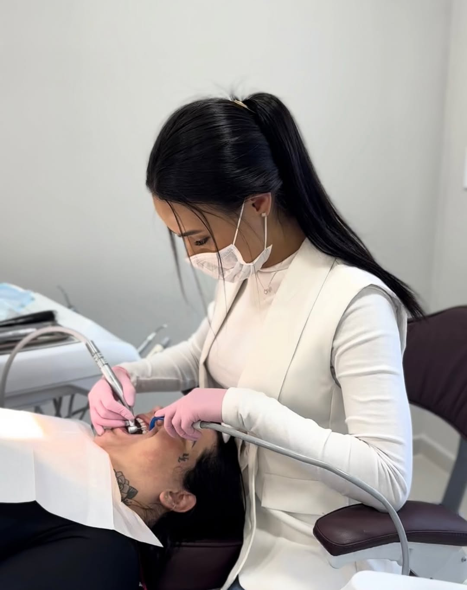
Cada indicação considera seu sorriso, seu rosto e seu objetivo estético.
A avaliação ajuda a entender qual tratamento realmente faz sentido para você.
Tratamentos
Tratamentos estéticos pensados para transformar sorrisos e harmonizar resultados.
Conheça os procedimentos da Dra. Vitória Passos e veja como cada detalhe pode valorizar o seu sorriso com naturalidade.
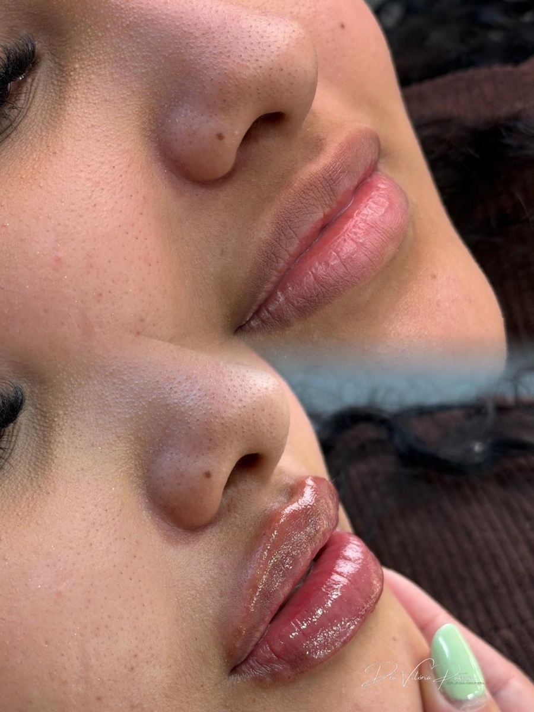
Preenchimento Labial
Antes e depois com contorno, equilíbrio e acabamento natural.
Clique e saiba mais
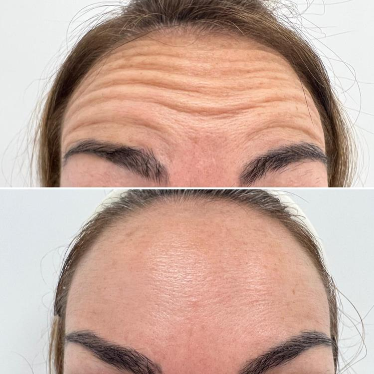
Botox
Suavização das linhas com resultado leve e expressão preservada.
Clique e saiba mais
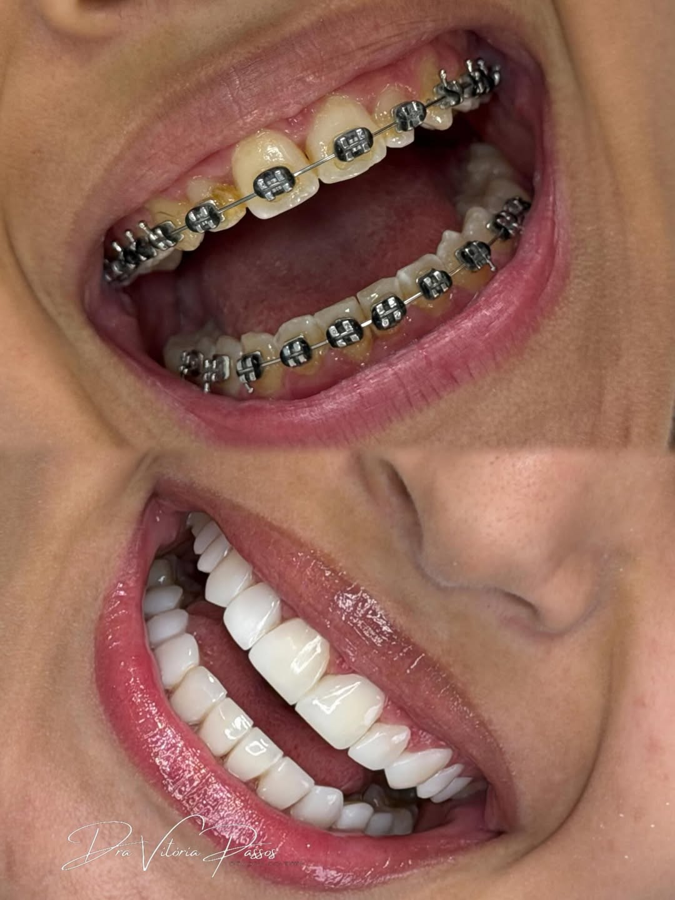
Lentes em Resina
Transformação do sorriso com brilho, forma e naturalidade.
Clique e saiba mais
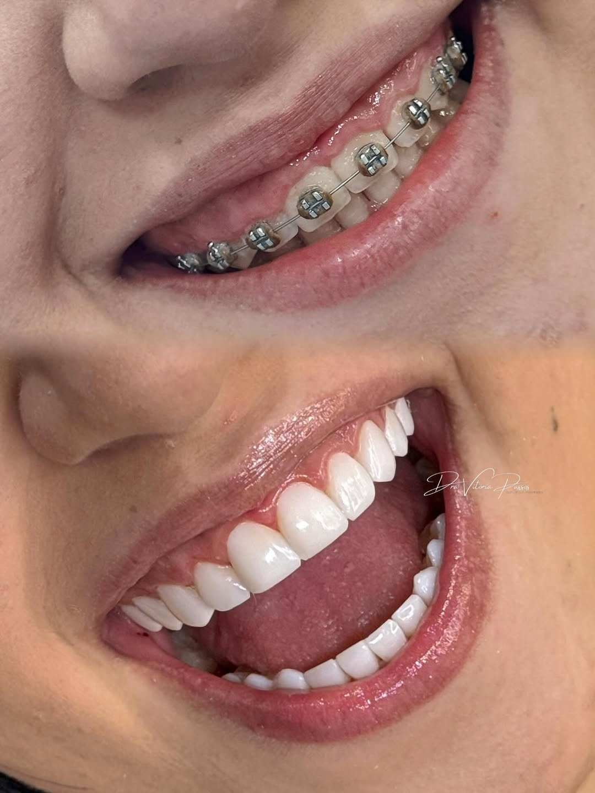
Lentes em Resina + Gengivoplastia
Lentes em resina e gengivoplastia para mais simetria e um sorriso sofisticado.
Clique e saiba mais
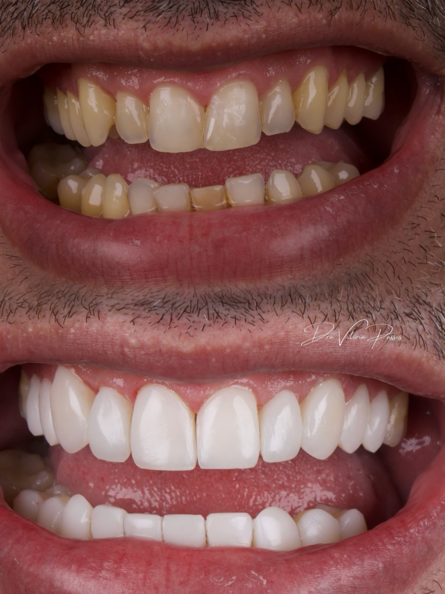
Lentes Premium
Transformação premium do sorriso com estética clara, brilho e acabamento natural.
Clique e saiba mais
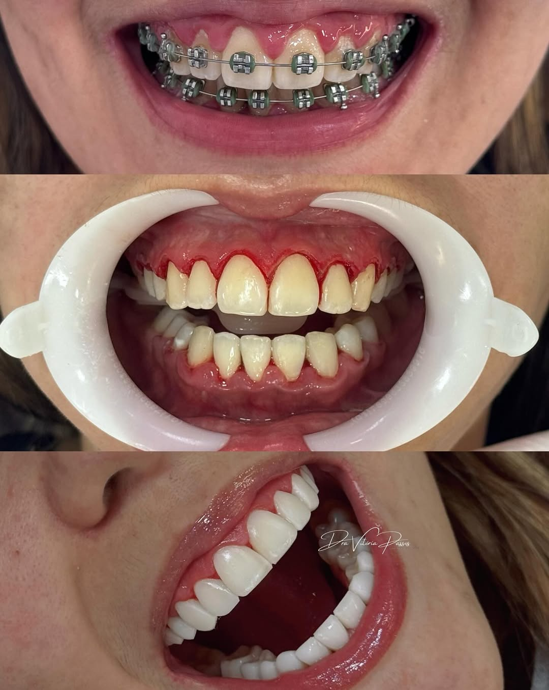
Gengivoplastia
Contorno gengival mais harmônico para destacar o sorriso.
Clique e saiba mais
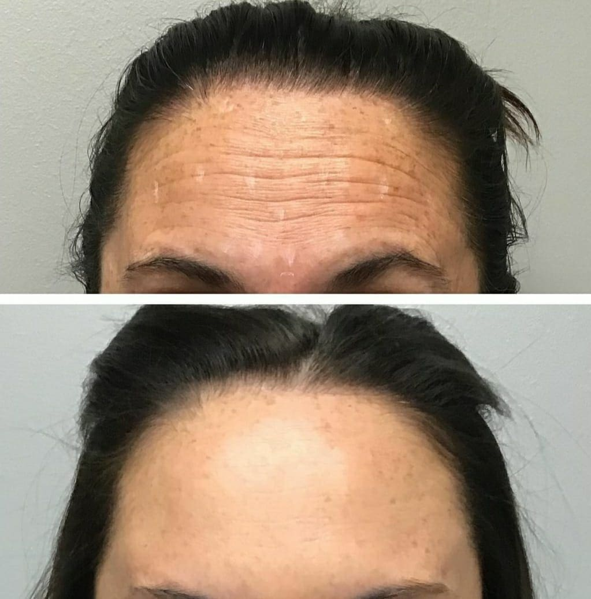
Botox
Mais leveza na testa e leitura facial mais descansada.
Clique e saiba mais
Sobre a Dra. Vitória
Experiência, formação e cuidado para transformar sorrisos com naturalidade.
A Dra. Vitória Passos atua na odontologia há 3 anos, com CRO/SP ativo e uma abordagem que une técnica, sensibilidade estética e planejamento individual.
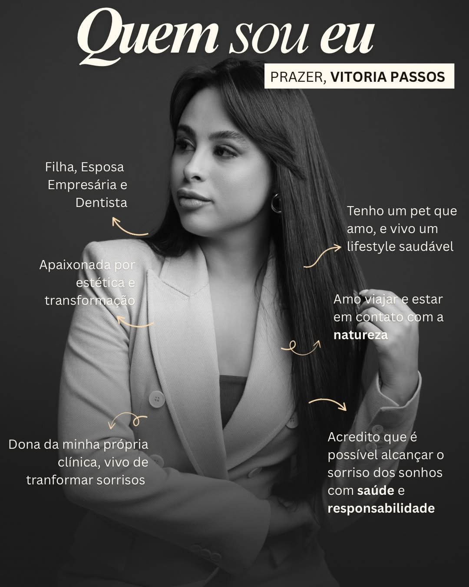
Formada pelo Unieuro, conduz cada avaliação com olhar atento para sorriso, face e harmonia do resultado, sempre com foco em naturalidade, segurança e responsabilidade clínica.
- 3 anos de atuação na odontologia
- Mais de 500 clientes atendidos
- Formação em Odontologia pelo Unieuro
- Atendimento com foco em estética, leveza e resultado elegante
O melhor atendimento com 5 estrelas.
O Que Nossos Pacientes Dizem
Com nota 5,0 no Google e dezenas de avaliações, a melhor forma de conhecer a Dra. Vitória é ouvindo quem já passou por aqui.
O melhor atendimento com 5 estrelas.
Como funciona
Como funciona sua avaliação com a Dra. Vitória.
Um processo simples para entender o seu objetivo, avaliar o seu caso com cuidado e indicar o tratamento que realmente faz sentido.
Você chama no WhatsApp, conta o que incomoda no sorriso ou na harmonia facial e recebe o direcionamento inicial.
A Dra. Vitória analisa sorriso, gengiva, lábios, expressão e o resultado que você busca para entender o que combina com você.
Com base no seu caso, você entende quais tratamentos podem ser indicados, o que esperar e qual próximo passo vale mais a pena.
O objetivo é que você saia da consulta entendendo com clareza o que faz sentido para o seu sorriso, para a sua autoestima e para a imagem que você deseja ver no espelho.
A próxima
transformação
pode ser a sua.
transformação
pode ser a sua.
Agende sua avaliação e descubra o melhor caminho para valorizar sua autoestima.
Quero ser a próxima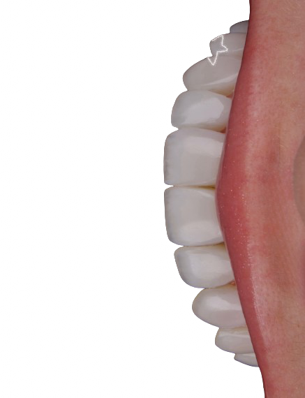
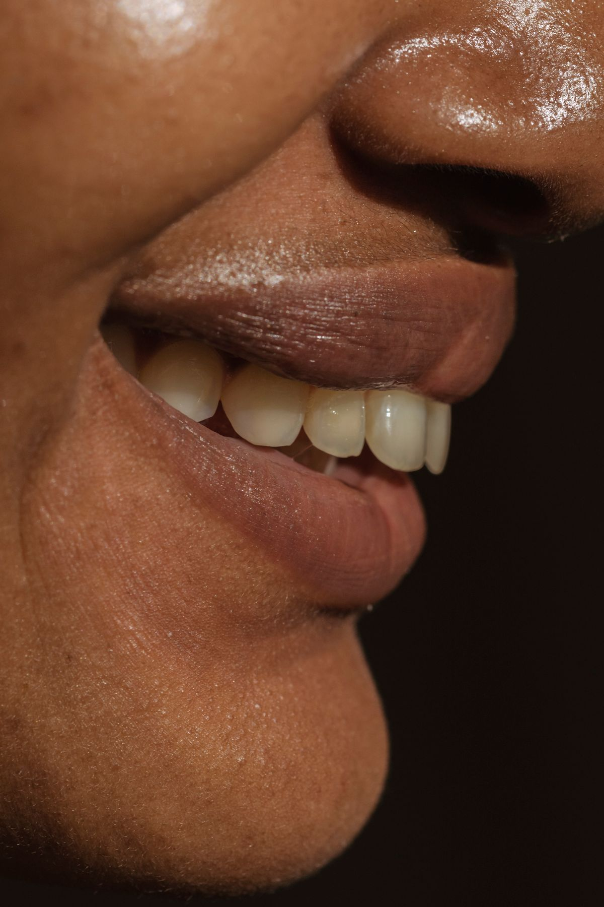
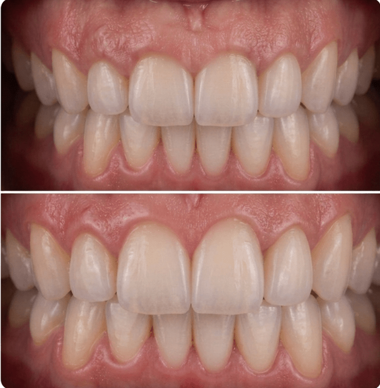
Dúvidas comuns
Perguntas que ajudam a decidir com mais segurança.
Respostas rápidas para quem ainda está entendendo qual tratamento faz mais sentido e como funciona o agendamento.
Como saber qual tratamento é ideal para mim?
Isso depende do seu objetivo. Lentes em resina costumam fazer mais sentido para transformar forma e estética do sorriso, botox para suavizar linhas de expressão, preenchimento para dar contorno e volume aos lábios, e gengivoplastia para harmonizar o excesso de gengiva. A avaliação é o que define a melhor indicação para o seu caso.
Os resultados ficam naturais?
Esse é um dos principais focos da Dra. Vitória. O planejamento considera proporção, expressão facial e harmonia do sorriso para buscar um resultado elegante, leve e coerente com você.
Em quanto tempo consigo começar meu tratamento?
Isso varia conforme o procedimento indicado e a sua avaliação. Em muitos casos, após esse primeiro atendimento já é possível entender o planejamento e organizar os próximos passos.
Preciso já saber o procedimento antes de agendar?
Não. Você pode agendar mesmo tendo só o objetivo em mente. A consulta serve justamente para entender o que te incomoda e traduzir isso em uma indicação segura e personalizada.
Como faço para agendar a avaliação?
É só chamar no WhatsApp pelos botões da página. A partir daí, você recebe as orientações iniciais para marcar sua avaliação.
Posso avaliar mais de um procedimento na mesma consulta?
Sim. Se você tem dúvidas entre sorriso, gengiva, lábios ou harmonização facial, a avaliação permite comparar possibilidades e entender com mais clareza qual caminho faz mais sentido.